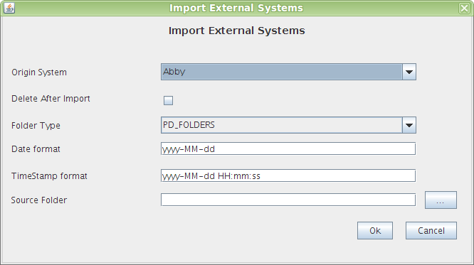

Exportar e Importar Carpetas
This option can be used to import documents scanned and clasified in:
- Kofax Capture
- Abbyy FineReader
The documents are to be stored in a folder structure along with its metadata and classification in their respective standard format (XML for Abbyy and csv-txtfor Kofax).
Each folder in the file system will be created as a folder OpenProdoc, under the current folder. Documents are created according to the document type shown in the file metadata.
The possible options and their effects are:
- Source System: Currrently, you can select Kofax Capture and Abbyy FineReader.
- Delete after Import: When checked, after the import process, all the original documents and metadata will be deleted. It is advisable to keep a copy in advance, at least until you perform your periodical OpenProdoc backup , especially if the number of documents to import is great.
- Folder Type: Openprodoc folder type to be assigned to each of the file system folders imported. The folder type must not have required metadata, as initially will be empty.
- Date Format: The date format with which you have saved the document metadata.
- TimeStamp Format: The TimeStamp format with which you have saved the document metadata.
- Folder to be imported: Indicates the file system folder from which you import the folder structure and documents.

After the Import, OPD shall summarize the number of folders containing imported documents number. If an error occurs, it will display a message with the reason for the error.
At the time of import, must exist the definitions:
- Folder and Document types: Although not necessarily be identical, must contain at least the same metadata.
- Mime Types: Similarly must exist but does not have to match exactly the definition.
Help Index OpenProdoc